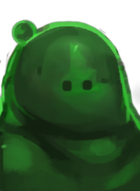

VISCOUS

A psychic sea anemone in a protoplasmic suit, Viscous can throw Splatter to cover the area in green goo which slows down his victims and leaves them vulnerable to Puddle Punches, which will knock his enemies away from their friends and his friends away from their enemies. Even if they manage to catch Viscous it doesn't matter, as anything inside The Cube is completely invulnerable. Soon Goo Ball comes, and walls painted green will be joined by echoes of screams.